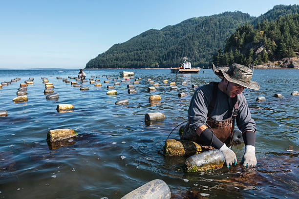

Sustainable Fishing
How responsible fishing practices protect our oceans and secure future food supplies — and what you can do as a student, consumer, and citizen.
Introduction to Sustainable Fishing
Fishing has fed human civilisations for thousands of years. Today, over 3.3 billion people rely on fish as a primary source of protein, and the fishing industry employs more than 600 million people worldwide. But this essential food source is under severe pressure. Modern industrial fishing has grown so efficient that it now extracts fish faster than populations can replenish — a pattern that, if unchanged, threatens the collapse of entire marine ecosystems.
Sustainable fishing is the practice of catching fish at a rate that allows populations to maintain themselves over time. It means using methods that minimise bycatch (the accidental catch of non-target species), reducing habitat destruction, and ensuring that fishing communities can depend on the ocean for generations to come. It sits at the heart of UN SDG 14: Life Below Water.

Why It Matters
The health of our oceans is directly linked to the health of our planet. Fish are a keystone component of marine food chains — their removal creates cascading effects that damage entire ecosystems. When apex fish like sharks and tuna are overfished, populations of their prey explode uncontrollably, throwing the balance of sea life into chaos.
Coral reefs — home to 25% of all marine species — are severely threatened by destructive fishing. Beyond ecology, overfishing has devastating humanitarian consequences. Coastal communities in developing nations face food insecurity when local fish stocks collapse.
Impact on Food Security
Over 3.3 billion people rely on fish as a primary source of protein. When fish populations collapse, entire communities lose their primary food source and livelihood. Women make up an estimated 47% of the workforce in small-scale fisheries and are disproportionately affected by stock collapse.
Economic Impact
Illegal, unreported, and unregulated (IUU) fishing costs the global economy up to $23 billion per year. Destructive fishing practices damage the very ecosystems on which long-term fishery productivity depends, undermining the livelihoods of the 600 million people employed in the industry worldwide.

Unsustainable Fishing Methods
Understanding what unsustainable fishing looks like is the first step towards demanding change. Several common industrial methods cause severe damage to marine environments:
Bottom Trawling
Massive nets are dragged along the ocean floor, destroying coral, sponges, and seabed habitats that took thousands of years to form. One trawl pass can devastate ecosystems that won't recover for centuries.
Blast Fishing
Explosives are detonated underwater to stun or kill fish for easy collection. This destroys coral reefs and kills everything in the blast radius — not just the target species.
Ghost Fishing
Lost or abandoned fishing gear (ghost nets) continues to trap and kill marine animals — including endangered sea turtles and dolphins — for years after being discarded.

Sustainable Fishing Solutions
Sustainable fishing is not about stopping fishing entirely — it's about fishing smarter. A range of proven approaches can protect marine ecosystems while still supporting livelihoods and food security.
- Catch quotas and science-based management: Setting legal limits on how much of each species can be caught per season, based on population surveys conducted by marine biologists.
- Marine Protected Areas (MPAs): Designating zones where fishing is restricted or prohibited, allowing fish populations and habitats to recover. Currently, only around 8% of the ocean is protected.
- Selective fishing gear: Using hooks, traps, or nets designed to target specific species and sizes, dramatically reducing bycatch of dolphins, turtles, and juvenile fish.
- Aquaculture (fish farming): Responsibly managed fish farms can reduce pressure on wild stocks. Sustainable aquaculture avoids harmful chemicals, escape of non-native species, and destruction of coastal wetlands.
- Eco-certification schemes: Labels such as the MSC (Marine Stewardship Council) certification allow consumers to identify and choose fish products from well-managed, sustainable sources.
- Community-based fisheries management: Empowering local fishing communities to manage and monitor their own resources leads to better compliance and more effective conservation.

Sustainable Fishing By the Numbers
The table below summarises key global indicators relating to sustainable fishing targets under SDG 14.
| Indicator | Current Status | Target / Goal |
|---|---|---|
| Fish stocks at sustainable levels | 66% (FAO, 2022) | 100% by 2030 (SDG 14.4) |
| Ocean area under protection | ~8% | 30% by 2030 (30x30 Initiative) |
| Illegal fishing (IUU) volume | 11–26 million tonnes/year | Elimination via monitoring |
| Harmful fishing subsidies | $35.4 billion/year globally | Reform by 2025 (WTO agreement) |
| MSC-certified fisheries | ~500 globally | Continued expansion |
What You Can Do — Take Action
Sustainable fishing is not just a government or industry responsibility. Every consumer decision you make sends a signal to the market. Here are concrete actions you can take as a student and citizen:
- Choose certified seafood: Look for the MSC (Marine Stewardship Council) blue label or ASC (Aquaculture Stewardship Council) label when buying fish.
- Use the Good Fish Guide: The Marine Conservation Society's free app tells you which fish species are sustainable to eat right now.
- Raise awareness on campus: Talk to your university about sourcing sustainable seafood in dining halls and cafeterias.
- Write to your MP: Advocate for stronger fishing regulations, the end of harmful subsidies, and expanded marine protected areas.
- Support ocean charities: Organisations like Oceana, Surfers Against Sewage, and the Marine Conservation Society campaign directly for sustainable fishing policy.
- Reduce demand for unsustainable species: Avoid commonly overfished species like Atlantic cod, bluefin tuna, and wild-caught prawns unless verified as sustainable.
The ocean has an extraordinary capacity to recover — but only if we give it the chance. By making more informed choices and speaking up for ocean-friendly policies, students and young people can be a powerful force for change in protecting the life below water.